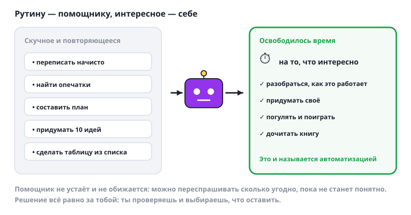

Не бойся ИИ: он забирает рутину
ИИ — это инструмент, как калькулятор или велосипед. Он не живой и ничего не решает за тебя. Его дело — скучная повторяющаяся работа, чтобы у тебя осталось время на интересное.

Что полезно знать
- Рутина — это то, что повторяется. Переписать начисто, найти опечатки, составить план, сделать из списка таблицу, придумать десять вариантов названия. Скучно и однообразно — как раз для помощника.
- Освободившееся время — твоё. Это и называется автоматизацией: работу делает программа, а время остаётся тебе. Его можно потратить на то, чтобы разобраться в теме, придумать своё или просто погулять.
- Бояться нечего. ИИ не следит за тобой и ничего не делает сам: он отвечает, только когда ты спрашиваешь. Осторожность нужна в другом — не отправлять личное и проверять ответы, об этом были прошлые уроки.
- Он не устаёт и не обижается. Можно переспрашивать хоть десять раз, просить объяснить ещё проще, говорить «я не понял». Живого человека неловко дёргать, а помощника — нет.
- Решение всё равно за тобой. ИИ предлагает, а выбираешь и проверяешь ты. Он ошибается, поэтому последнее слово человека.
Попробуй сам: вспомни дело, которое ты делаешь каждую неделю и которое тебе скучно. Расскажи о нём ИИ и спроси, как его ускорить.
Стиральная машина не отняла у людей чистую одежду — она отняла стирку руками. С рутиной за компьютером то же самое.